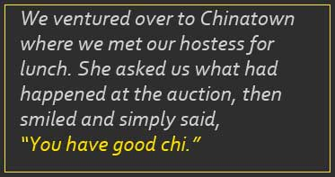
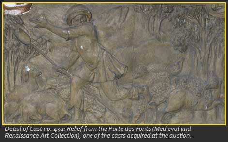
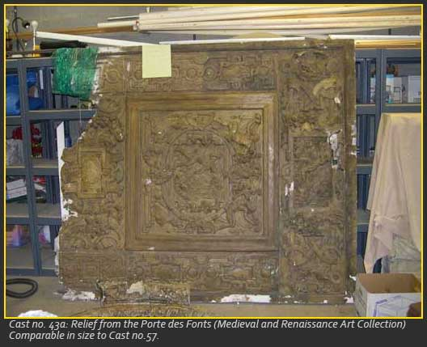
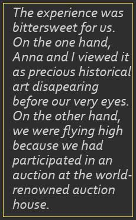

Part II: Auction "Chi"

Away with the jeans, and on with the serious black attire, this was the requirement the next morning, Tuesday, February 28, 2006. When we felt sufficiently dolled up, the HOV lane saw us through the Long Island morning traffic into the city. And we thought northern Virginia was hectic! No reason for coffee when one has to navigate that road! Finally we reached the Sotheby's building in all its grandeur, on the lower east side of Manhattan. Arriving early, we increased the jitters with more coffee in the rooftop café, while peering down at the exhilarating New York morning energy in motion. At 9:30, we registered and received our paddles with smiles and encouraging wishes of "Good luck!" We were all smiles. No false pretenses were made to hide the fact that we were students, albeit seasoned ones, representing our University, and overwhelmed to be there! Anna and I introduced ourselves to Doralynn Pines, the Associate Director for Administration at the Metropolitan Museum of Art, and to Becky Wilford, the Senior Administrator in the Director's Office at the Metropolitan. As people sauntered in for the auction, the two of them excitedly viewed our portfolio of the GMU collection of plaster casts. They complimented the efforts of the students, explaining that this was exactly what the Metropolitan had hoped for when they offered to loan plaster casts to universities throughout the United States. But they could not comment on the day's likely outcome, and whether or not we would have a chance for a successful bid, given our small budget. This was the giant question mark looming over the event.We sat in the last row of the auditorium so we could study the behavior of the participants. Balanced on the edges of our seats at 10 a.m., we flipped through our sale catalogues, noting that we would bid on any cast, given the opportunity. Nervously, we elbowed each other.

Precisely at 10:15, a tall handsome man appeared at the podium. He swiftly dictated Sotheby's strict and lengthy rules, regulations, terms of sale, and cast pick-ups at the Bronx warehouse. Then, crack went the gavel, and away we went! Each item or lot appeared on the screen about the front telephone-bidding desk. The numbers swiftly shot up to four digits. Anna and I turned to one another with wide eyes, realizing that there could now be a dollar amount attached to the collection at GMU. Yet it quickly became sickeningly apparent that some bidders could never be outbid. Then all of a sudden an opportunity arose to bid on an item that went below the $100 starting price. Down it went to $50. One of our paddles shot up. Crack! "Sold! - To the lady in the back row!" On the screen, the cast appeared to be an architectural piece - a celing coffer - in decent shape. Why did we not have a challenger? And why did the auctioneer seem to give us a special smile? Was it because he knew we were young and naïve? Did we ooze the image of students? In reading the measurements after we got the bid, we saw that it was more than six feet square - quite large to say the least (see no 57). (What a hoot to have seen the looks on our faces!) Its size and likely weight had probably steered us away from that particular piece the afternoon before, and we hadn't made a note next to the lot number. But we couldn't worry about moving it at the moment. And that $50 bid gave us the confidence to try again.
In the next bidding episode, we acquired another treasure. A few more times, bids slid down to $50, but the numbers ran the entire gamut. Five-digit bids had already begun when we successfully bid on the piece that was, and still is, the closest to our hearts. The slide on the overhead screen displayed the second piece in the lot - special, but again with awkward measurements. Perhaps the bidding audience did not turn the catalogue pages quickly enough to see that the other cast in that lot was featured twice in the catalogue, once with a double-page spread of some of its details. A more likely reason for our success had to do with the cast's fragile condition. Our thinking was that our friend Nick Xhiku the sculptor could restore it. However, this purchase used the meat of our budget - plus! Fortunately, in advance of the auction, our sponsor had seen the difficulty of staying within the original budget. We had reached our limit, but couldn't we add $100? Up another $50, and another… okay, we can donate $200. Whichever one of us not bidding that time kept nudging, and later asked, incredulously, "So, when were you planning on stopping?" But it did stop. And we couldn't pass up the opportunity to bid on yet another fabulous bargain for GMU. Again, its size probably prevented more rivalry, but at least weight wasn't an issue that time.The bidders were interesting characters and provided us with endless entertainment. One telephone bidder rarely stopped, repeatedly squashing competitors who had appeared to have large pockets. A couple of bidders used domineering behavior, coming in only near the bitter end. One whom we called the "Imperator" always raised his arm at an angle, pointed his index finger, and proclaimed his price. Long after our money ran out, to witness that pompous man being outbid was well worth the sit. At the telephone-bidding platform to our left, the representative of a distant high-bidder merely raised her hand slightly, for what seemed like an eternity. We nudge and whispered, "Here comes the pompous one again… What a steal! …They don't know what they have. Oh good, the good-looking guy standing along the back wall got it! That woman is irritating…." Finally, as with all auctions, there were spectators for curiosity's sake, or perhaps even for art's sake!

Consistently someone began with a low bid. Late in the auction we planned to do just that with some Parthenon frieze blocks, of which GMU already had three (nos. 6 - 8). "Sure, why not? Let's play with the sharks. We can start at $100 because we know where that's going to go!" We planned a little skit on videotape: one of us would bid $100, and, smiling at the camera, allowed the paddle to drop on the seat, as if to say, "Of course we don't have a chance!" We could hear the sharks along the back wall chuckling. We watched the screen as it shot right up to $25,000. A pristine lion relief from the French Renaissance topped that with a bid of $42,500. Who made those bids? A rumor was floating around that some large museum was bidding over the telephone, and that bidder did not appear to have an end in sight. We hoped that the casts going to the highest bidders would go on public display somewhere in the United States. At the end of the day, we were handed instant sales results: 177 lots had sold for over half a million dollars, including the auction house's aggregate, rivaling the profits from many other auctions at Sotheby's. The experience was bittersweet for us. On the one hand, Anna and I viewed it as precious historical art disappearing before our very eyes. On the other hand, we were flying high because we had participated in an auction at the world-renowned auction house. Jauntily, we skipped away with five more casts to add to GMU's collection. Having functioned on adrenaline for eight hours, we ventured over to Chinatown where we met our hostess for lunch. She asked us what had happened at the auction, then smiled and simply said, "You have good chi."